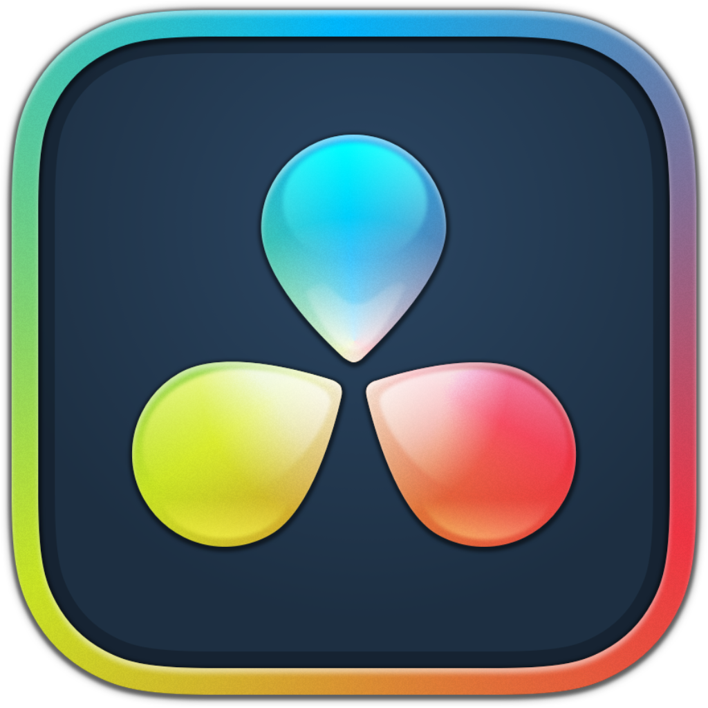
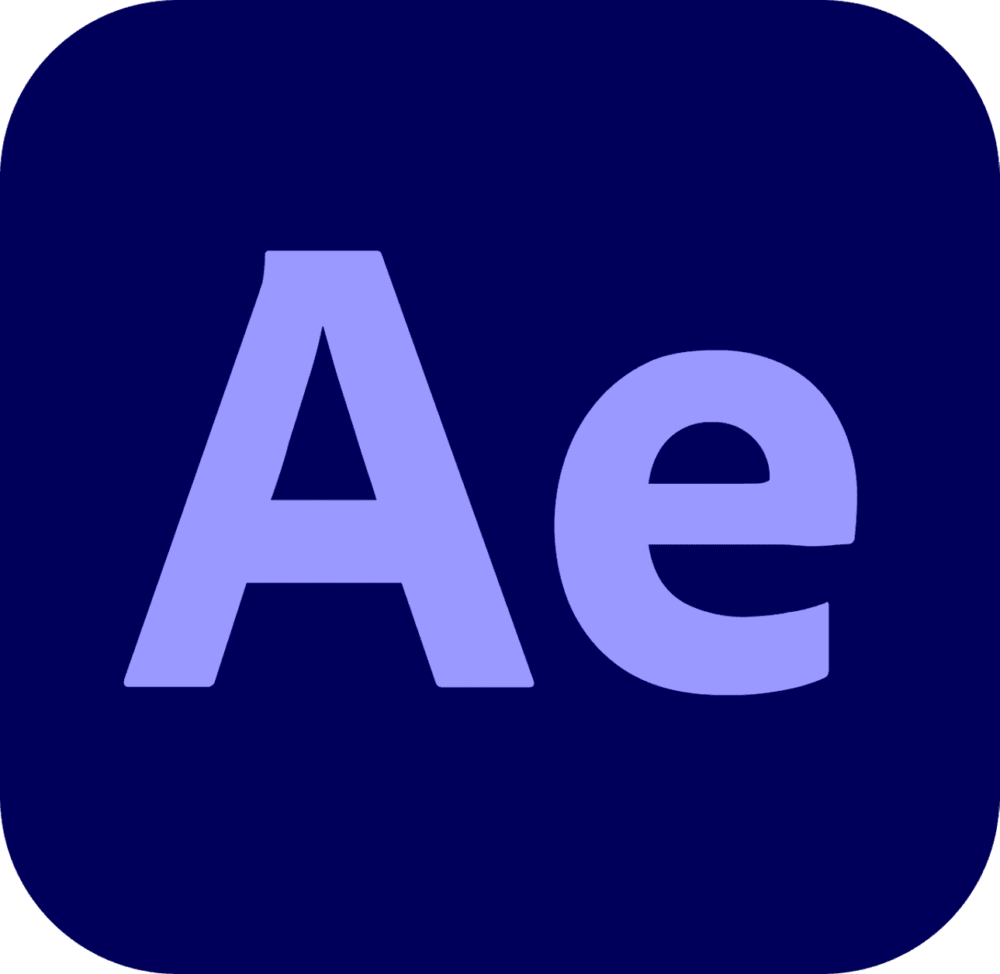
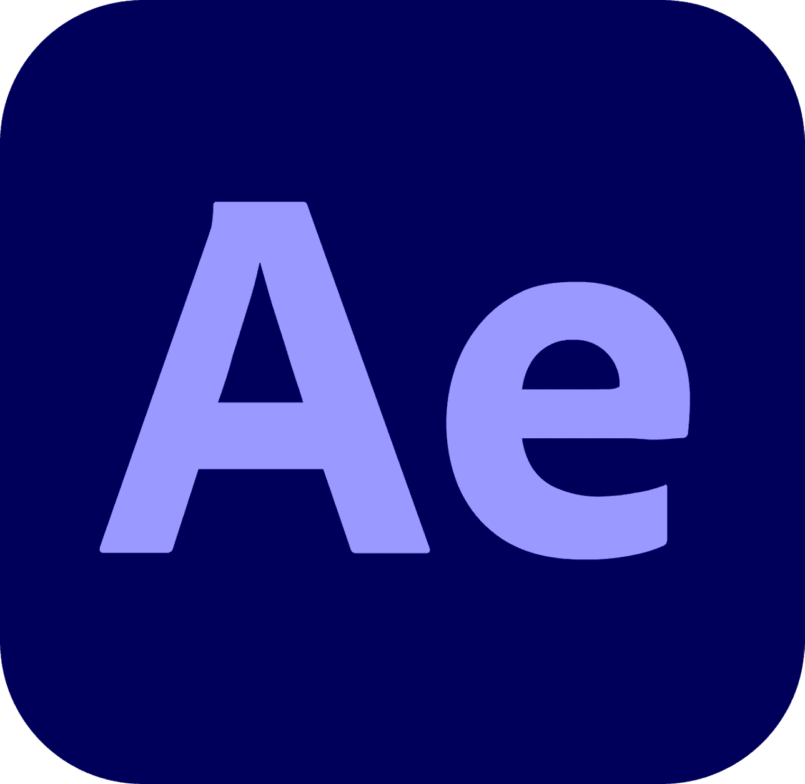
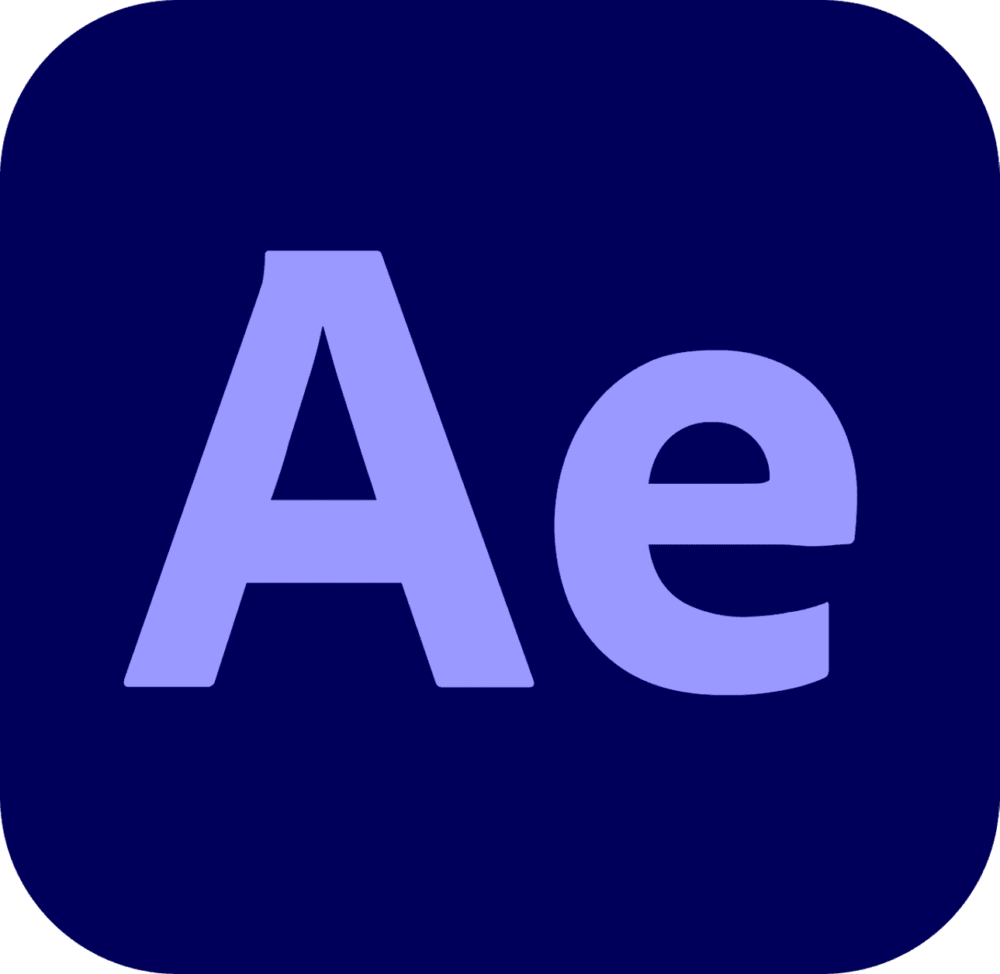

Design graphique
- Parcours "Création Numérique" à l'IUT de Bobigny
- Notions en histoire de l'art, intérêt pour les arts graphiques
- Théorie : théorie des couleurs, lisibilité, impact, émotion, symbolisme
- Technique : Design web/print, chartes graphiques, photographie, montage/étalonnage photo, mise en page interactive...
Je m'efforce toujours à essayer de nouvelles choses et à trouver mon propre style.


Musique
- Accès à des instruments et évènements musicaux dans mon éducation
- Piano (depuis mes 8 ans), batterie (depuis mes 15 ans), guitare (depuis mes 17 ans)
- Production de musiques en MAO (FL Studio depuis 2023)
- Fan de hip hop, amateur d'électro, de jazz, de variété, de funk, de soul, de pop...
- Appliquer une vision créative/narrative à travers le son
- Mixer et arranger
Depuis 2025, j'écoute de plus en plus de styles et d'artistes pour compléter mon bagage musical.
Audiovisuel
- Culture diverse : à travers ma famille, mon parcours scolaire, comme passe-temps...
- Mise en pratique de ma passion à l'IUT de Bobigny : Écrire un scénario cohérent, préparer un tournage, faire face aux imprévus...
- Technique : Réalisation, cadrage, prise son, coordination et même jeu d'acteur
- Montage : Rythme, étalonnage, son, motion design, intégration fond vert
Je suis aussi bien capable de créer un court-métrage narratif cohérent que de créer un spot publicitaire pour les réseaux sociaux.

 


Communication
- Toutes les facettes de ma formation (design, audiovisuel, UX/UI, développement...) sont au service de produits de communication (applications, organisations, évènements...)
- Démarche marketing : Benchmark, positionnement, identification des cibles, stratégie et déploiement
Je peux créer une stratégie de communication efficace et l'appliquer directement.
Design UX/UI
- Règles de la navigation web : règle des 2 clics, accessibilité, ergonomie...
- Repérer les besoins utilisateurs : Personae, parcours utilisateurs, UML...
- Mise au point d'un produit web de A à Z (arborescence, wireframes, maquettes, prototypage...)
Mon expérience sur Internet me permet de reconnaître les tendances et de toujours avoir une solution à un problème donné.